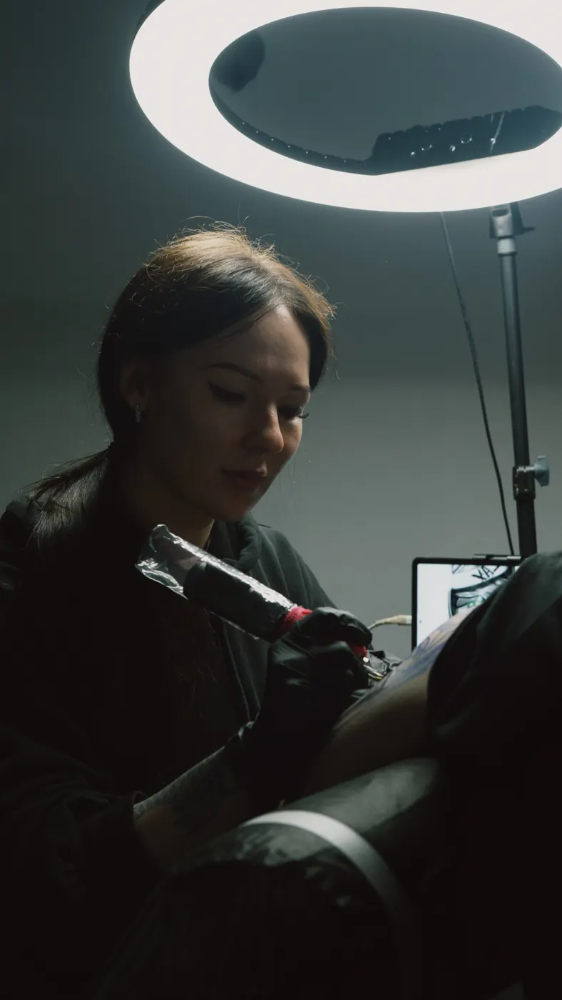
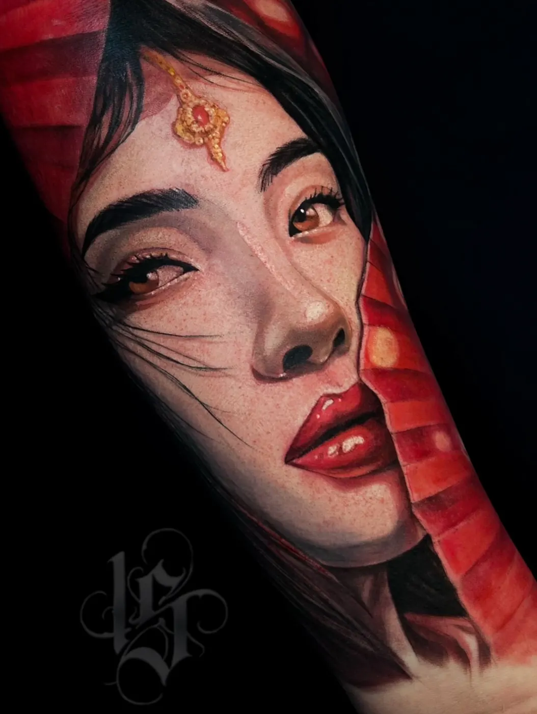
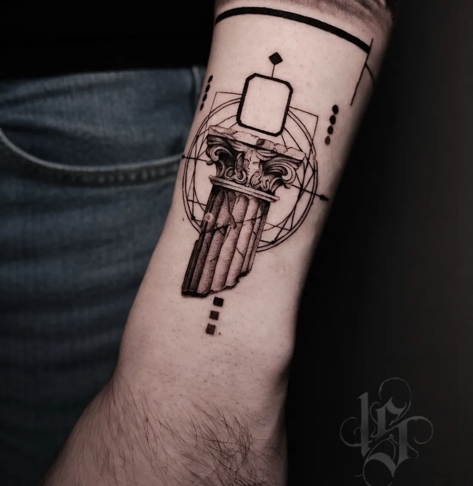
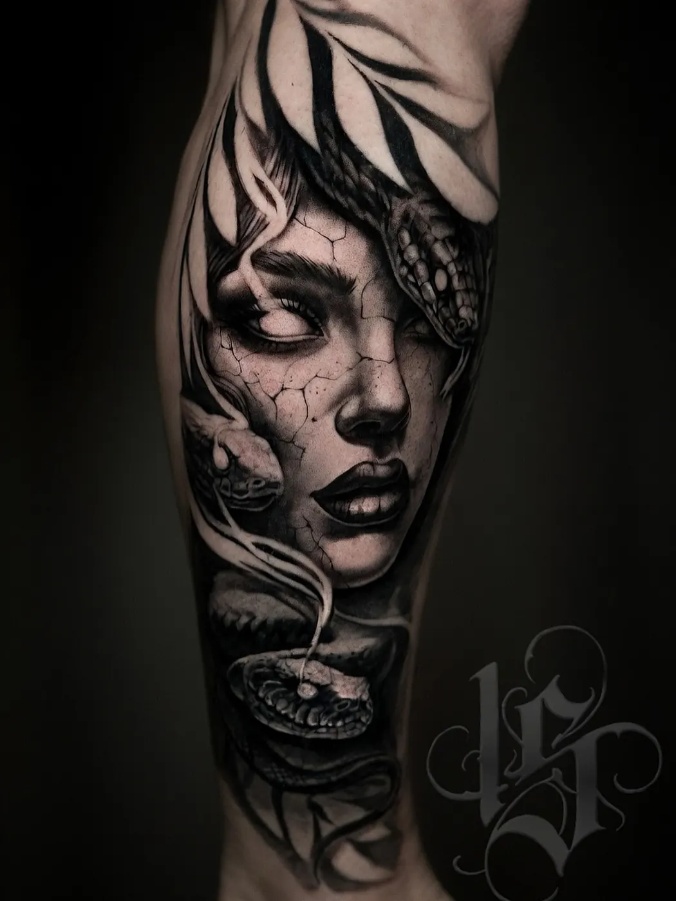
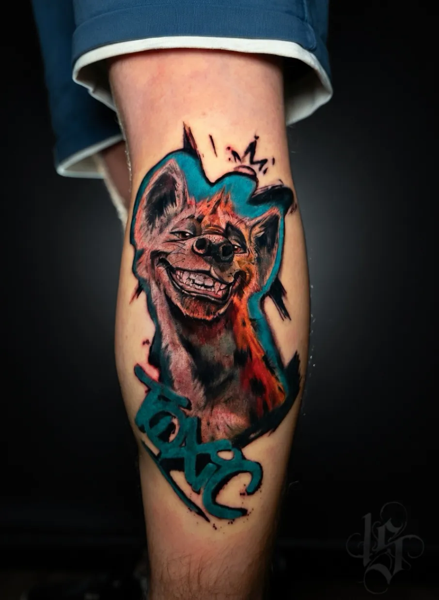
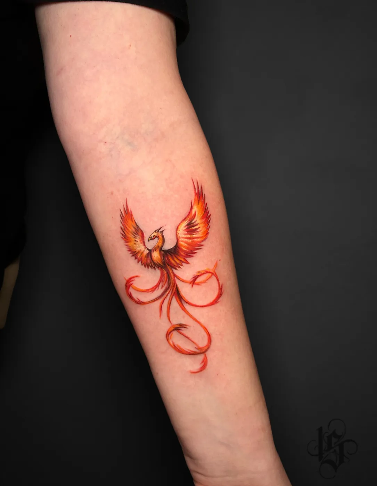
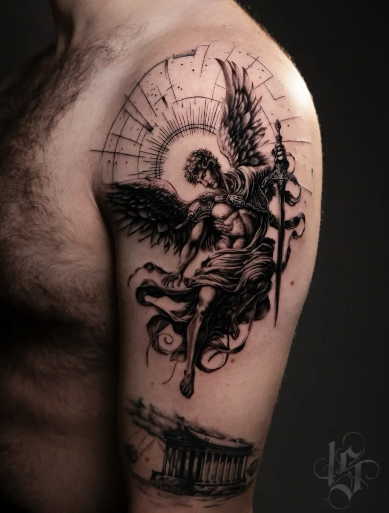

Мастер INKSIDE · Минск
Тату-мастер Надеждатонкие линии и цвет ✦
Микрореализм, цвет и ч/б, мини и fine line, перекрытия и коррекция. Хороший выбор для первой тату.
Превращает размытую идею в чистый аккуратный эскиз.
Работытонкие линии и цвет






Вопросыкоротко
Надежда делает первую тату?
Да. Она превращает размытую идею в чистый аккуратный эскиз, поэтому это хороший выбор для первой тату.
В каких стилях работает Надежда?
Микрореализм, цветной и ч/б реализм, большие проекты, перекрытие старых татуировок, коррекция старых работ, мини и fine line.
Как записаться к Надежде?
Напишите в Telegram идею в двух словах и укажите, что хотите к Надежде. Или позвоните +375 44 511-19-12.
Ещё вопросы и подробности · 5
Сколько стоит тату у Надежды?
Прайс общий для студии: от 180 BYN за работу до 1 часа, каждый следующий час 150 BYN, эскиз от 40 BYN.
Специализация
- Микрореализм - детальный рисунок в компактном формате.
- Цветной реализм - объём, оттенки и переходы цвета.
- Ч/б реализм - оттенки серого и контраст, в том числе портреты.
- Большие проекты - крупные композиции, в том числе в четыре руки вместе с Виталием.
- Перекрытие старых татуировок и коррекция старых работ.
- Мини и fine line - тонкие линии, надписи, небольшая графика.
Как записаться к Надежде
Нажмите «Записаться к Надежде» и напишите в Telegram идею в двух словах и что хотите сделать именно у Надежды. Можно приложить референс или фото зоны. Консультация бесплатная: обсудим размер, место и цену до сеанса.
- Идея. Присылаете референс или просто мысль. Бесплатно обсуждаем размер, место и цену.
- Эскиз и стенсил. Эскиз рисуется под ваше тело, перевод на коже показывает, где пройдёт каждая линия.
- Сеанс. Одноразовые иглы вскрываем при вас. Крупное делим на сеансы.
- Заживление. План ухода по дням, через месяц присылаете фото, мы проверяем результат.
Цены
Прайс общий для студии: от 180 BYN за работу до 1 часа, каждый следующий час 150 BYN, эскиз от 40 BYN, консультация 0 BYN. Мини до 5 см - от 180 BYN. Подробнее - на странице цен на тату.
Где смотреть работы
Больше работ Надежды - в Instagram и TikTok @st.nadya_tattoo (TikTok). Второй мастер студии - Виталий, все мастера - на странице мастеров.
Ещё по теме
 Перекрытие татууслуга
Перекрытие татууслугаК Надежде?напишите идею
Напишите в Telegram идею в двух словах и что хотите к Надежде. Консультация бесплатная.
- телефон
- +375 (44) 511-19-12